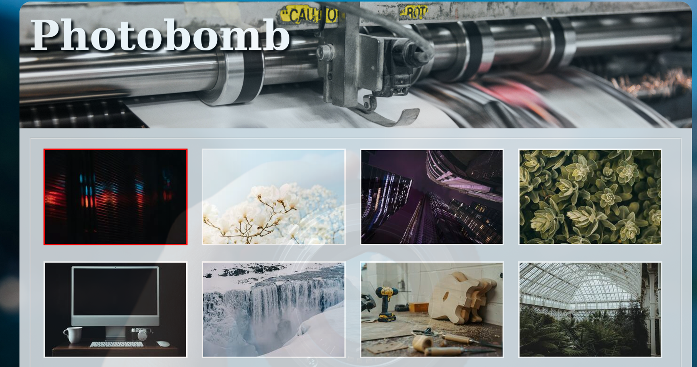
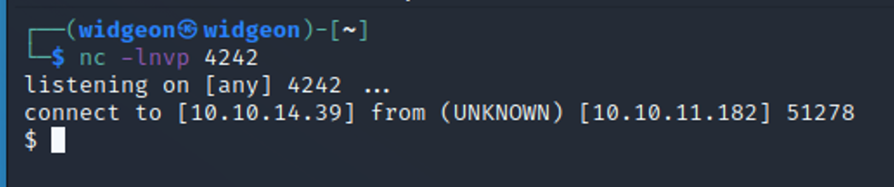
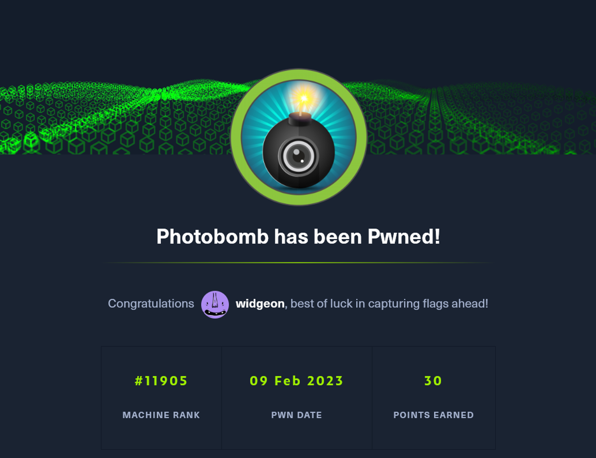

February 9, 2023
Photobomb
Tools Needed: Gobuster, Python, Burp Suite and NetCat
Step 1: Start off with an Nmap Scan
nmap -sV -sC <IP ADDRESS> -oA <FILE NAME>
We can see that port 80 is open which likely means there is a website.
Add in photobomb.htb to the /etc/hosts file. This is a very common thing for Hack The Box and it will save you on some headaches later on.
When a CTF challenge has a website, I immediately think “gobuster and burp suite”. Gobuster is a great tool to enumerate a website. It allows us to scan for potential directories, such as www.<WEBSITE>.com/dev as well as vhosts on the host such as dev.<WEBSITE>.com
This will scan for any directories that come after the main website:
gobuster dir -u http://photobomb.htb/ -w /usr/share/wordlists/dirbuster/directory-list-2.3-medium.txt
This one will scan for any vhosts:
gobuster vhost -u http://photobomb.htb/ -w /usr/share/seclists/Discovery/DNS/subdomains-top1million-5000.txt –append-domain
Quite a lot of directories were found but no vhosts.
Go to the webpage photobomb.htb or put in the IP 10.10.11.186 to go to the page.
Not a lot on the page but we find a place to log in.

Not a lot of info about this but we can always try commonly used credentials.
Robots.txt doesn’t have much either, this seems to be a dead end.
Taking a look at the page closer with Dev Tools (F12 on Firefox) we can find some credentials left in a .js file. If you put them into the prompt for the login you get in!
Not much to do here but download some photos. I decided to open the page in burp suite so I could get a bit more info.
When you download a photo you’re making a POST request. This means this could be injected with some sort of command. I tried a lot of reverse shells, and this is the one that worked. You need to replace all the spaces with a + so that it sends properly.
https://github.com/swisskyrepo
Setup a netcat listener for the reverse shell we are going to POST to the web page.
The shell should catch, and we can get the user flag!
Always check what you can run as sudo when you get in.
We found that we can run the command “sudo /opt/cleanup.sh” So let’s check that out. This script itself doesn’t look too harmful, and not much we could do with it. But if you notice our sudo privileges we can also set our environment. This means we can “create” our own “cd” and “find” commands.
We need 2 things for this exploit to work. We already have the sudo privilege, now we just need a directory we can write to. I chose /tmp because it is easy to remember. You can execute almost any command with this method. Echo “COMMAND HERE” >> /tmp/cd echo “COMMAND HERE” >> /tmp/find Because the sudo script uses both cd and find, we can “create” our own version of them, which will run as sudo.
If you change find to execute bin/bash you will become sudo after you run the script from the environment, we define.
You can also have the command read the root.txt file to get the flag.
Either way you will get the root flag :)
Success! Photobomb has been pwned üòé
 -->